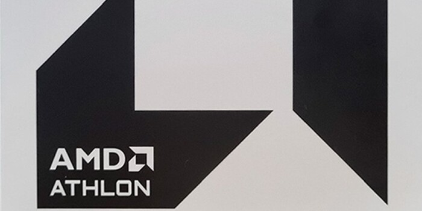

Hírek
Különleges VGA-t tervezett a Galax

A Galax egy igen érdekes VGA-val készül a kínai piac számára. Ez a GeForce RTX 4090 20th Anniversary Edition nevet viseli, és ebből már nem lehet meglepetés, hogy egy GeForce RTX 4090-ről van szó, bár az még nem ismert, hogy az órajelek tekintetében a referenciaértékek vannak-e követve, vagy alkalmazásra kerül némi gyári tuning is. A hardver jellegzetességeit tekintve, utóbbi valószínűbb. A teljesen fehér újdonság méretes hűtőt kapott, rejtett külső tápcsatlakozót használ, illetve 24+4 fázisú tápáramkörre szavaztak a tervezők, ami a manuális tuning miatt hasznos lehet.
Megkavarta a GeForce RTX 4090 helyzetét az USA friss rendelete

Október második felében írtunk arról, hogy szigorít az AI gyorsítók Kínába történő exportálásán az USA, amely November 17-én életbe is lépett, így elsődlegesen Kínából, de ezen túlmenően több országból is eltűntek a GeForce RTX 4090-es VGA-k. Persze egyelőre csak papíron, ugyanis a gyártók az előző hetekben minden szállítmányt az érintett piacokra fókuszáltak, gyakorlatilag teljesen hanyagolva a nyugati igényeket. Emiatt a GeForce RTX 4090-as VGA-k árazása igencsak megváltozott, ugyanis a rendeletben említett, exporttilalom alá eső országokban van elég termék, de ezek ára úgy van megszabva, hogy relatíve sokáig kitartson a készlet, míg nyugatabbra átmeneti hiányok alakultak ki, ami szintén felviszi a hardverek árát. Az Egyesült Államokban a GeForce RTX 4090-et átlagosan 2000 dollár környékén mérik a kereskedők, ami jóval a hivatalos listaár fölött van.
Új dobozt kap az Athlon 3000G
Még a 2019-es esztendő végén mutatkozott be az Athlon 3000G nevű SoC APU, ami azóta is elérhető a piacon, és elsődlegesen az alacsony árának köszönhetően relatíve sokat is értékesítenek belőle. Persze abszolút belépőszintű modellről van szó, így sok teljesítmény azért nincs benne, de irodai szintre megteszi. Az AMD nem is gondolkodik a fejlesztés kivezetésén, amit az is bizonyít, hogy új dobozt fog kapni a rendszerchip. Erről Hoang Anh Phu mutatott először képeket az alábbi X bejegyzésben, és kiderült az is, hogy a vállalat a gyári hűtőt is lecseréli. Itt persze nem kell komoly változásokra számítani, ugyanis az AMD időnként frissíti a hűtőrendszerét, a csere is leginkább annak szólhat, hogy a régebbi dizájn gyártása leáll.
Tőlts fel új híreket
Készítette: Károly, Gergely, Martin